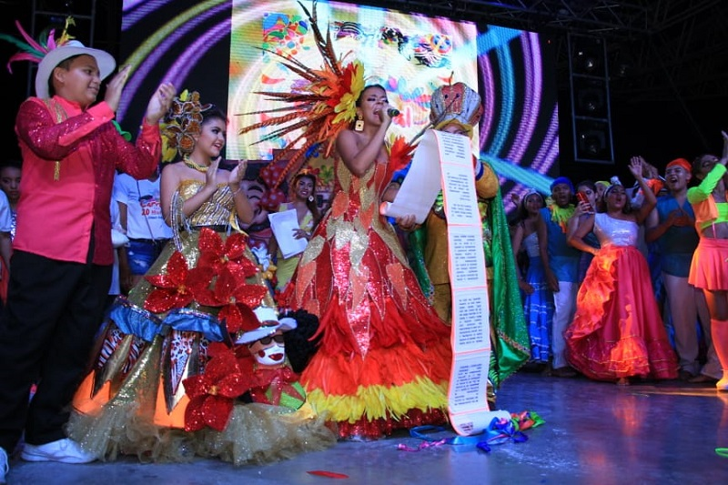

Las festividades, que son presididas por la Reina del Carnaval y el Rey Momo nombrados el año anterior, empiezan extraoficialmente con los pitos que anuncian la llegada del nuevo año. Los eventos del precarnaval comienzan oficialmente con la Lectura del Bando, siguen con la Toma de la Ciudad, la Coronación de la Reina, el Carnaval de los Niños y la celebración más importante, la Guacherna, desfile nocturno que se realiza el penúltimo viernes antes del sábado de carnaval, instaurado en 1974 gracias a la iniciativa de la compositora Esthercita Forero. "La temporada de precarnaval desborda en acontecimientos, unos más tradicionales que otros: desfiles callejeros, actos folclóricos, conciertos de música popular, coronación de personajes típicos de la fiesta, como la reina del Carnaval, la reina popular, el Rey Momo.""
La lectura del Bando es uno de los eventos más importantes del carnaval de Barranquilla, pues con ella se da inicio oficial a los precarnavales. En este acto que se celebra tradicionalmente en la Plaza de la Paz, el Alcalde de la ciudad de Barranquilla hace entrega de las llaves de la ciudad a la Reina del Carnaval, ‘cediendo su poder’ por lo que dure la temporada carnavalera. El "Bando" sería el "decreto" que da vía libre al jolgorio durante las carnestolendas y es leído por la Reina del Carnaval en un acto folclórico junto al rey Momo y los reyes del carnaval de los niños. El Bando está dividido en artículos que explican lo que está permitido y lo que está prohibido para los asistentes de la fiesta, sirviéndose de acontecimientos contemporáneos que fueron importantes o llamativos. Entre cada artículo se hace una muestra de alguna danza típica del Carnaval, como abrebocas de lo que se aproxima. A continuación, la transcripción del bando del carnaval de Barranquilla de 2016, leído por la reina Marcela García Caballero: Plaza de la Paz, donde actualmente se realiza la Lectura del Bando. Yo, Marcela García Caballero, currambera de nacimiento, carnavalera por vocación y juniorista por convicción, con el poder que me concede el Dios Momo desde esta esquina en el Mercado de la Magola, Barrio Abajo, Montecristo y Barlovento, y acompañada nadie más y nadie menos que de tres grandes personajes de la gozadera real, mi marimondero de toda la vida César Paraguita, mi eterna negrita Puloy, Doña Isabel, y el desorden hecho hombre, José Cassiani alias El Pavo, declaro, ordeno, dispongo y mando, Artículo Primero: Que a partir de este instante, todo aquel que se haga llamar recochero, carnavalero o raspacucayero está obligado a darle una rebaja al mal genio, a ser mala paga con el aburrimiento, a pedirle presta'o la carcajada del que está al lado, a cambiar los paga diarios por fiestas en el barrio, a fiarle a la bacanería y a darle una ñapita a la alegría. Porque durante mi reinado, y que lo oiga desde el que allá parado hasta el que tengo aquí al oído, la sabrosura barranquillera no viene con IVA incluido. Artículo Segundo: Desde esta barbería rebolera Los Mopris, recién motila'a y custiodiada por el Congo Barranquillero Adofo Guel y las princesas del Paloteo Edaida Orozco y Angela Pedroza, ordeno que en cada esquina de mi territorio currambero, a punta de zapateo, se rompan las baldosas y las mujeres nos pongamos guapachosas. Que los timbales retumben desde la Cien hasta la Casita de Paja, que las maracas se apoderen del son en todas las casas y que la salsa brava se escuche a toda hora, se los ordena su reina que está bien mandona, y esto no es Miss Universo, aquí nadie me quita la corona. Artículo Tercero: Un momentico que este tercer decreto viene con sabor a cocá, caballito y bollo de angelito. Luz Marina, Angélica, Jose y mi adorada Mati Herrera, los reyes de palenque en Barranquilla y los patrones de esta esquina recochera, les tengo un dato, aquí en la tierra de raíces africanas donde la alegría se come, declaro que este carnaval esté libre de bochincheros y lleno de parranderos. Y pa’l que me desobedezca, sin fiesta se va a quedar… Y ojo! Donde se me llegue a volá', sea una lea o un man, vuelvo y lo encierro como al Chapo Guzmán. Artículo Cuarto: Encaramada en un pick-up, con mi pinta verbenera, le digo a la arenosa entera que todo barranquillero que se respeta debe estar en la juega. En este punto del vacile champetero, El Bosque, Carrizal, Santo Domingo, La Sierrita, entre otros, quiero ordenar que si van a bailar lo hagan apercollado meneándose de lado a lado y a el o la que quiera, se los digo con esta ceja bien trepada, tiene permiso de desatar la gata interna que llevan atrapada, así que, miau miau recontra miau lo digo hoy, porque entre ser y no ser, yo soy. Artículo Quinto: Termino mi Bando aquí en Siete Bocas, la esquina con más sabor carnavalero en Barranquilla, junto con algunos de mis garabateros, Luis Fernando Vengoechea, Álvaro Bustillo, Briadne Velásquez, Ricardo Sierra, Armando Alarcón, Magaly Salas y Humberto Pernett, mis cumbiamberos con su director German Álvarez, mis hacedores que esta noche me acompañan en escena, mis Reyes de los Niños, Ronaldo y Antonella, mis reinas de reinas y, por supuesto, mi acompañante y mi amigo, el Rey Momo, Lisandro Polo Rodríguez, certifico enfrente de esta Plaza de la Paz con su ambiente bacano y pa' que lo oigan los que están en Nueva Granada y en el Metropolitano, que este año, los protagonistas de esta fiesta somos absolutamente todos, que la diversidad y la historia de nuestras danzas valen oro, que la cumbia es y seguirá siendo la única majestad, la que nos ha hecho patrimonio de verdá' verdá', que los carnavaleros que disfrutamos el baile y la pernicia tendremos goce desde ahora hasta el miércoles de ceniza, y que todo Colombia y el mundo está invitado a este Macondo de magia verdadera. Mi gente linda, bienvenidos al carnaval de Barranquilla 2016 que desde hoy, es #UnaSolaGozadera. Repitan conmigo, que desde hoy es Una Sola Gozadera.
Se realiza el jueves anterior a la Batalla de Flores cuando, en medio de una fiesta con espectáculos musicales y de baile, la reina del año anterior le impone la corona a la reina actual con la cual presidirá los eventos dispuestos para los cuatro días de carnaval. Este evento ocurre actualmente en el estadio Romelio Martínez. No obstante, el acto de coronar a la reina del carnaval data del año 1918 en el desaparecido Club Barranquilla con la primera reina del carnaval, Alicia Lafaurie Roncallo. Desde entonces se ha mantenido intacta la tradición de escoger a las jovencitas de los estratos más altos para que presidan las fiestas. Esto ha hecho que sea común leer, escuchar y ver cómo la corona rota entre unos cuantos apellidos: Gerlein, Donado, Vengoechea, Lafaurie o Abuchaibe. Tatiana Velásquez explica: En un carnaval cada vez más multitudinario, quien ostenta el título de reina se convierte en el centro de todas las miradas, gana mayor exposición mediática y aún después de los cuatro días de éxtasis colectivo, sigue actuando como embajadora de la tradición en toda Colombia y el exterior, porque hasta mediados de año llega la sucesora. También con tantos reflectores encima, la reina aumenta sus probabilidades de convertirse en actriz, relacionista pública o presentadora de televisión, como les ha ocurrido a las exsoberanas de los últimos 10 años. Pero si acaso el principal beneficio, para muchas de las familias, es el de refrendar su posición social. Porque en la medida en que un apellido acumule más reinas comienza a ser considerado una dinastía de carnaval. Todavía hoy, las soberanas de hace 10, 25 y hasta 50 años participan en cocteles y desfiles. Inclusive, entre algunas familias llega a existir competencia por quedar en el imaginario colectivo como la que tuvo el mejor reinado de carnaval por la opulencia de los vestidos: solo el de la noche de coronación puede sobrepasar los 30 millones de pesos. Gran parte de los gastos, por ejemplo los relacionados con los trajes que debe portar la Reina durante su coronación, corren por cuenta de la familia de quien fue elegida reina, lo que ha desembocado críticas porque chicas de barrios populares no pueden aspirar a este título debido a las cifras astronómicas que se supone cuesta ser Reina del Carnaval. Según el discurso oficial, es coronada como reina la candidata que más convenza con su baile y carisma a los 11 miembros de la junta directiva de Carnaval SA., que a puerta cerrada se reúnen, todos los años y seis meses antes del carnaval para definir su nombre. En cuanto al espectáculo, este resulta ser toda una maratón de danzas; por esta razón se ha convertido año tras año en la prueba de fuego para las reinas del carnaval quienes tienen que demostrar que sí pueden bailar con gran destreza toda la gama de bailes típicos carnavaleros -como la cumbia, la salsa, el merengue, champeta, etc.- y así cumplir satisfactoriamente con las actividades programadas durante las carnestolendas. Esta velada está acompañada por integrantes de algunas de las comparsas más importantes que participan en el carnaval y de músicos de talla nacional e internacional. En esta fecha se presenta además la canción oficial de la reina del carnaval.
Es un desfile dedicado a los niños. Participan comparsas colegiales y comunitarias, así como los Reyes Infantiles. En este desfile es común ver mini-carrozas adaptadas al tamaño de los niños;hay mucha alegría,y diversos disfraces tanto de cumbia,garabato,y fantasía. Realizada el domingo de la semana antes de empezar el carnaval y un día antes de Lectura de bando y coronación de reyes del Carnaval de los niños.

a guacherna es un desfile nocturno y el evento más importante de los precarnavales. Se realiza el penúltimo viernes antes del sábado de carnaval. En ella participan grupos folclóricos, cumbiambas, tamboras y disfraces a la luz de velas y faroles de colores. La guacherna nació a comienzos del siglo XX en el barrio Abajo. En sus inicios, durante los días de precarnavales, los vecinos llamaban con un guache (instrumento de percusión que produce un sonido similar al de la maraca) a los demás, para que comenzaran a preparar las danzas al son de tamboras y flauta de millo, siempre acompañados de mechones y velones para alumbrar la noche, alegrando los barrios de la ciudad. En el año 1974, se recupera esta tradición gracias a la iniciativa de Esthercita Forero, quien en compañía de Alicia de Andréis, logra que la junta organizadora del carnaval de Barranquilla lo incorpore dentro de la programación oficial. El desfile no existió realmente sino hasta 1974 y se le colocó el nombre de Guacherna por su creadora, Esther forero, que había visto un desfile nocturno en Santiago de Cuba, una noche en 1959. Al día siguiente investigó con folcloristas y supo que habían sido grupos pequeños que se fueron reuniendo de todas partes de la provincia y con el transcurrir del tiempo se fue dando la tradición del desfile de La Conga. Esther Forero recordó que en su tierra de origen, Barranquilla, no existía un desfile nocturno para los carnavales y cuando regresó a su tierra, decidió hacerlo y utilizó el nombre de Guacherna, que era un recuerdo de su niñez cuando los grupos de cumbia salían a practicar sus ritmos pasaban por las calles que tenían pocas luces y la gente decía que pasaba una "guacherna". En el año 1974 se instituyó el gran desfile que existe hasta la fecha como un gran y luminoso desfile nocturno.30 La canción insignia de esta fecha es "La Guacherna", composición de Esther Forero, cuya versión más conocida es el merengue dominicano interpretado por la orquesta de Milly Quezada y los Vecinos.